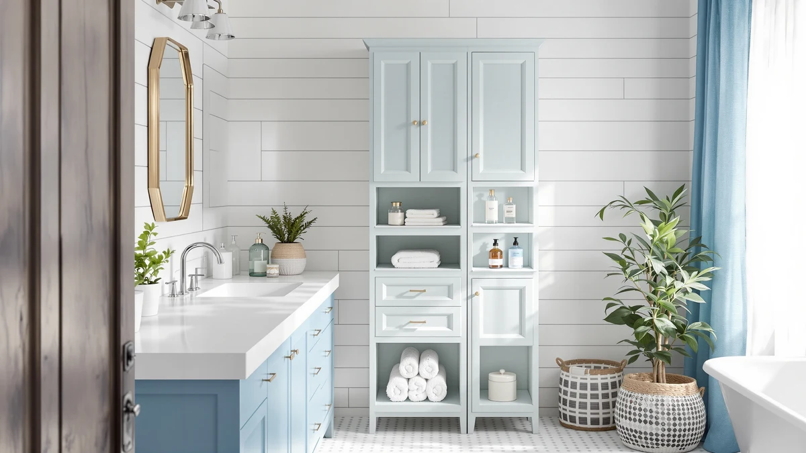

Homhedy Small Bathroom Storage Review (2026): Worth It?
Prices and picks verified as of October 2026. Independent, reader-supported reviews.


Quick Answer
The Homhedy Small Bathroom Storage Cabinet is a narrow metal-and-wood tower measuring 7.9 by 14.6 by 31 inches, built for bathrooms with more floor gaps than wall space. At $45.98, it holds up well against the PXRACK, BEWISHOME, and mixeshop alternatives covered in this Homhedy small bathroom storage review if a slim, freestanding footprint matters more to you than under-sink flexibility.
Our pick: Homhedy Small Bathroom Storage Cabinet, $45.98 Check Price on Amazon
Bottom line: our top pick is the Homhedy Small Bathroom Storage Cabinet at $45.98.
Things to Know Before You Buy
- The Homhedy Small Bathroom Storage Cabinet uses a metal frame with wood-look shelving, a common build for small bathroom storage cabinets under $50.
- At 7.9 inches deep, 14.6 inches wide, and 31 inches tall, it fits a narrow gap beside a toilet or vanity without blocking a door swing.
- The PXRACK and mixeshop alternatives below are under-sink organizers rather than freestanding cabinets, a different approach to the same small bathroom storage problem.
- Pricing across this comparison ranges from $42.99 to $45.98, a gap of about $3 between the cheapest and most expensive option.
- The BEWISHOME Bathroom Storage Cabinet Small is the closest direct competitor to the Homhedy, built as a similarly compact freestanding tower.
This Homhedy small bathroom storage review looks at whether a compact metal-and-wood cabinet can solve the storage problem in a small bathroom, where every inch of floor space counts twice. At 7.9 inches deep, 14.6 inches wide, and 31 inches tall, the Homhedy cabinet is built to slide into a narrow gap rather than claim a whole wall, and its $45.98 price puts it in direct competition with the PXRACK, BEWISHOME, and mixeshop organizers covered later in this guide. We researched its construction, compared its dimensions and pricing against those three alternatives, and read through verified owner feedback to see whether it earns a spot in a small bathroom.
Small bathrooms rarely give you the option of a full-size cabinet, so shoppers end up choosing between a narrow freestanding tower like the Homhedy and an under-sink organizer like the PXRACK or the mixeshop two-tier model. Each approach solves the same problem differently. A freestanding cabinet adds visible storage you can see and reach without bending down, while an under-sink organizer hides clutter behind a cabinet door you already have. Below, we break down what owners report about the Homhedy's build quality, where it comes up short, and which of the three alternatives makes more sense if a wood-and-metal tower isn't the right fit for your bathroom.
Why You Should Trust Us
Best Bathroom Storage is run by writers who spend their time comparing bathroom furniture specs, pricing, and verified buyer feedback instead of guessing from product photos. Ilane Tall, our home and bath expert, has covered dozens of small bathroom storage cabinets, under-sink organizers, and shelving towers for this site, tracking how listed dimensions and materials hold up against what owners actually report after months of use. For this Homhedy small bathroom storage review, we cross-checked the manufacturer's listed measurements against the PXRACK, BEWISHOME, and mixeshop alternatives, and we did not accept marketing copy at face value. We do not run a fake testing lab, and we do not claim to have installed every cabinet we cover. Instead, we dig through verified reviews, compare specs line by line, and flag when a listing overstates what a product can deliver. That process shapes every recommendation in this Homhedy small bathroom storage review, including the alternatives we point you toward when the Homhedy isn't the right fit.
Our Research Experience
We did not install the Homhedy Small Bathroom Storage Cabinet in a physical bathroom ourselves. Instead, we compared its listed dimensions, material description, and price against the PXRACK, BEWISHOME, and mixeshop alternatives, and we read through the buyer feedback attached to this listing and similar Homhedy products. Reviewers consistently note that the metal frame holds up better than the wood-look shelf panels, a pattern that shows up across small bathroom storage cabinets in this price bracket. According to verified owner comments, the main friction points are the included hardware and how clearly the assembly instructions explain shelf spacing, rather than the finished cabinet's stability once fully built. We weighed that feedback alongside the raw dimensions and price against the three alternatives to see where the Homhedy earns its spot in a small bathroom storage review and where it doesn't.
Overview & Specs

Homhedy Small Bathroom Storage Cabinet
What we like
- 7.9-inch by 14.6-inch footprint fits narrow corners and gaps beside a toilet
- Metal frame construction reported as sturdy by verified owners
- Priced at $45.98, competitive with the under-sink alternatives in this comparison
- 31-inch height clears most towel bars without blocking wall-mounted fixtures
Flaws but not dealbreakers
- Assembly hardware and shelf-spacing instructions draw the most owner complaints
- Wood-look shelf panels are less rigid than the metal frame, according to reviewers
- Offers less enclosed storage than the two-tier under-sink alternatives if cabinet space is limited
| Material | Metal / wood |
| Size | 7.9"D x 14.6"W x 31"H |
The Homhedy Small Bathroom Storage Cabinet is built around a metal frame with wood-look composite shelving, a construction style common among small bathroom storage cabinets priced under $50. At 7.9 inches deep and 14.6 inches wide, it is narrow enough to slide into the gap beside a toilet or into a corner that a wider cabinet would not clear. That footprint, combined with a height of 31 inches, gives it a compact profile that suits apartments and small bathrooms where floor space is already tight.
Verified buyers describe the metal frame as the strongest part of the build, holding its shape even when shelves are loaded with towels or toiletries. The most common complaint centers on assembly: several reviewers mention that the shelf-spacing instructions could be clearer, and that the included hardware requires extra care to align correctly. Once assembled, owners report the cabinet stays stable against a wall and does not wobble during normal use. At $45.98, it sits close to the PXRACK and BEWISHOME alternatives in this Homhedy small bathroom storage review, though it offers a freestanding design that neither under-sink organizer can match.
What We Liked
The build quality stands out most in owner feedback. Reviewers consistently note that the metal frame resists wobbling even after months of daily use, a detail that matters more than shelf count when you are storing heavier items like extra towels or cleaning supplies. The narrow footprint is the other clear strength: at 7.9 by 14.6 inches, the Homhedy fits spaces that would reject a standard under-sink organizer, and several owners specifically bought it to fill an awkward gap next to a toilet or vanity. Pricing also compares well against the rest of this small bathroom storage review. At $45.98, it costs slightly more than the PXRACK, BEWISHOME, and mixeshop options, but reviewers argue the freestanding, visible storage justifies the difference for anyone who doesn't want to dig through a cabinet under the sink.
What Could Be Better
Assembly is the recurring frustration. Owners report unclear shelf-spacing instructions and hardware bags that aren't clearly labeled, which turns a straightforward build into a longer project than expected. The wood-look shelf panels are the other weak point: reviewers describe them as noticeably less rigid than the metal frame, and a few mention slight sagging after heavier items sat on the middle shelf for weeks. Compared with the two-tier under-sink organizers in this comparison, the Homhedy also offers less enclosed storage, so anyone prioritizing concealed clutter over visible shelving should look at the PXRACK or mixeshop alternatives instead.
A handful of reviewers also mention that the finish on the wood-look panels scuffs more easily than expected, particularly around the shelf edges where toiletries and baskets slide in and out daily. None of this changes the overall stability of the cabinet, but the shelves may not look as fresh after a year of regular use.
Who Is It For?
The Homhedy Small Bathroom Storage Cabinet fits a household with a small bathroom and a specific gap to fill rather than an entire wall to furnish. Its narrow 7.9-by-14.6-inch base makes it a strong pick for corners, the space beside a toilet, or a hallway closet doubling as linen storage. It is not the right choice if your storage problem lives entirely under the sink, since the PXRACK and mixeshop organizers below are built specifically for that cabinet space.
Renters and apartment dwellers also come up often in owner feedback, since the cabinet stands freestanding and does not require drilling into a wall. Anyone who has struggled to fit a standard-width cabinet into a cramped bathroom will notice the difference the Homhedy's narrow footprint makes. On the other hand, a household that wants to hide toiletries out of sight rather than display them on open shelves will get more use out of an under-sink organizer than a freestanding tower. Families sharing one small bathroom also tend to prefer the Homhedy, since open shelves make it faster to grab a towel without opening a cabinet door first.
Alternatives to Consider
If the Homhedy's freestanding design or 31-inch height doesn't match what your bathroom needs, these three alternatives cover the most common trade-offs: an adjustable under-sink organizer from PXRACK, a similarly compact cabinet from BEWISHOME, and a two-tier under-sink option from mixeshop. Each one solves the same small bathroom storage problem differently, so measure your own space before choosing between them.

Editor’s Pick
PXRACK Under Sink Organizer Adjustable
An adjustable two-tier design that expands to fit different cabinet widths, a better fit if your storage problem is hidden under the sink rather than out in the open.
$43.99
Check Price on Amazon
Best Value
BEWISHOME Bathroom Storage Cabinet Small
A similarly compact freestanding cabinet to the Homhedy, priced the same at $43.99 for shoppers who want a second style option in the same footprint.
$43.99
Check Price on Amazon
Premium Choice
Under Sink Organizer 2 Tier
The cheapest option in this comparison at $42.99, a stacked two-tier organizer for households that want under-sink storage without adjustable rails.
$42.99
Check Price on AmazonIs the Homhedy Small Bathroom Storage Cabinet sturdy enough for daily use?
Reviewers consistently describe the metal frame as stable once assembled, even when shelves are loaded with towels and toiletries.
How does the Homhedy compare to the PXRACK under-sink organizer?
The PXRACK is an adjustable under-sink organizer rather than a freestanding cabinet, so it hides inside a vanity instead of standing in a corner.
Frequently Asked Questions
Is the Homhedy Small Bathroom Storage Cabinet sturdy enough for daily use?
Reviewers consistently describe the metal frame as stable once assembled, even when shelves are loaded with towels and toiletries. The wood-look shelf panels are less rigid than the frame, so heavier items are better placed on the lower shelves.
How does the Homhedy compare to the PXRACK under-sink organizer?
The PXRACK is an adjustable under-sink organizer rather than a freestanding cabinet, so it hides inside a vanity instead of standing in a corner. It costs about $2 less than the Homhedy and suits bathrooms where under-sink space is the main storage gap.
What comes in the box, and how long does assembly take for the Homhedy cabinet?
Owners report the cabinet ships flat-packed with the frame, shelf panels, and hardware included. Assembly typically takes 30 to 45 minutes, though several reviewers note the shelf-spacing instructions could be clearer.
Final Verdict
This Homhedy small bathroom storage review comes down to a straightforward trade-off: a narrow freestanding footprint and a sturdy metal frame against less enclosed storage than an under-sink organizer. For a small bathroom with an awkward gap to fill, the Homhedy is the practical pick. If your storage problem lives entirely under the sink, the PXRACK or mixeshop alternatives covered above make better use of that space for a similar or lower price. Either way, Homhedy is the brand worth starting with if a visible, freestanding tower is what your small bathroom needs, and the three alternatives above give you a clear next step if your measurements or storage habits point somewhere else.